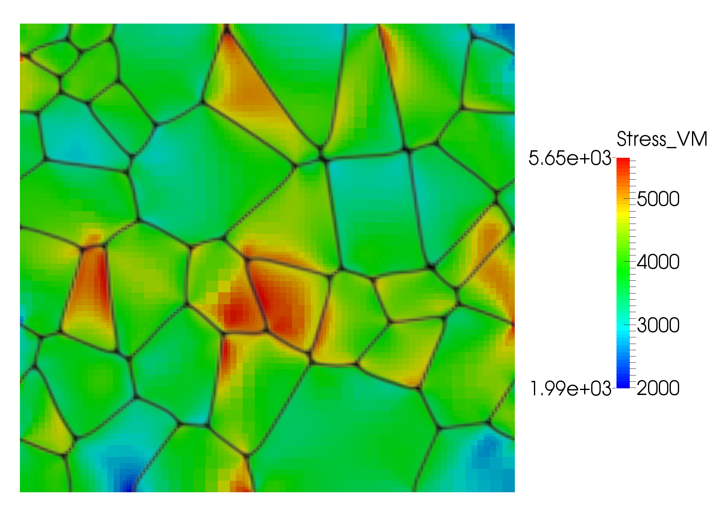

Elastic Driving Force for Grain Growth

Elastic energy driven grain growth in a 2D hexagonal copper polycrystal with one shrinking grain. The result was calculated using an example input file from the combined module. The input file is hex_grain_growth_2D_eldrforce.i
Grain boundaries (GBs) migrate to reduce the free energy of the system. One source of energy that can be reduced is the grain boundary energy, and the standard grain growth model accounts for this driving force (commonly called the curvature driving force). In addition, GBs can migrate to reduce the elastic energy stored in the system. To account for this driving force in the grain growth model, we couple to a mechanics solution.
Model Summary
In our model, grains are represented by order parameters, where . Each grain has a unique ID and is represented by a specific order parameter , though the order parameter used for each grain can change throughout the simulation. The assignment of the order parameters to each grain is controlled by the GrainTracker user object.
The crystal orientation of each grain is described by a set of three Euler angles . The Euler angles define a rotation tensor used to rotate the elasticity tensor in the crystal frame of reference to the current frame. Thus, the elasticity tensor for each grain is fully defined by
where is the fourth-order tensor product. In the phase field model, the grain boundaries are represented by a diffuse interface in which multiple order parameters have non-zero values. Thus, the elasticity tensor at any point in space is a weighted average of the elasticity tensors from all grains with non-zero order parameters, i.e.

Elastic energy driven grain growth in a 2D hexagonal copper polycrystal with one growing grain. The result was calculated using an example input file from the combined module. The input file is hex_grain_growth_2D_eldrforce.i
where the interpolation function is equal to 0 when and 1 when , i.e.
The local stress is calculated from the local elasticity tensor according to
and the elastic energy density is calculated according to
The elastic energy is added to the free energy of the system, as shown on the Basic Phase Field Equations page. The Allen-Cahn equation defining the evolution of the order parameters becomes
where
The partial derivative of the elasticity tensor with respect to the order parameters is defined by

Elastic energy driven grain growth in a 2D copper polycrystal. The result was calculated using an example input file from the combined module. The input file is poly_grain_growth_2D_eldrforce.i
Model Implementation
The additional contribution of elastic energy on the Allen-Cahn equation describing grain growth is implemented in the phase field module with the kernel ACGrGrElasticDrivingForce. It only adds the elastic energy contribution, so it must be used with the ACGrGrPoly kernel. The addition to the residual in weak form is
and is implemented in the code according to
Real
ACGrGrElasticDrivingForce::computeDFDOP(PFFunctionType type)
{
// Access the heterogeneous strain calculated by the Solid Mechanics kernels
RankTwoTensor strain(_elastic_strain[_qp]);
// Compute the partial derivative of the stress wrt the order parameter
RankTwoTensor D_stress = _D_elastic_tensor[_qp] * strain;
switch (type)
{
case Residual:
return 0.5 * D_stress.doubleContraction(strain); // Compute the deformation energy driving force
case Jacobian:
return 0.0;
}
mooseError("Invalid type passed in");
}
The stress and strain are computed using kernels from the solid mechanics module, but a material in the phase field module was created to compute the polycrystal elasticity tensor, ComputePolycrystalElasticityTensor. It also computes the derivatives of the elasticity tensor with respect to all of the order parameters. This material must be used with the GrainTracker user object.
As with the basic grain growth model, creating separate blocks in the input file for every order parameter would be burdensome. Thus, we have implemented an action that adds the elastic driving force kernel for each order parameter. The action is PolycrystalElasticDrivingForceAction and it must be used with the PolycrystalKernelAction.
This capability is tested in
moose/modules/combined/tests/ACGrGrElasticDrivingForce
and is demonstrated on larger problems in
moose/modules/combined/examples/phase_field-mechanics/hex_grain_growth_2D_eldrforce.i
moose/modules/combined/examples/phase_field-mechanics/poly_grain_growth_2D_eldrforce.i